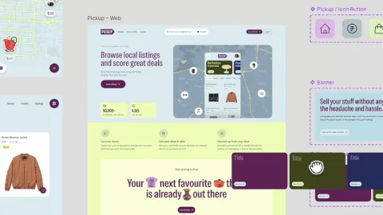

Referências
Descomplicando Sites - Elementor MCP: Crie Site com ChatGPT/Claude e Edite no ELEMENTOR
Atila Iamarino - Finalmente a bolha da IA vai estourar
Attekita Dev - REA: o que está acontecendo com a engenharia reversa por IA?
Braincast 654 — O algoritmo tem candidato?
Rino de Boer - Goodbye Elementor. I’m moving on.

Diego Ivo - Figma começa a publicar sites com backend em Payload
The Futur / Chris Do e Allan Dib - Better Work Won’t Get You More Clients. This Will.
Marcelo Kimura - Coisas que não fazem sentido um designer aprender em 2026
Edu Agni - Inteligência artificial não entende de arrepio
Página 1 de 10